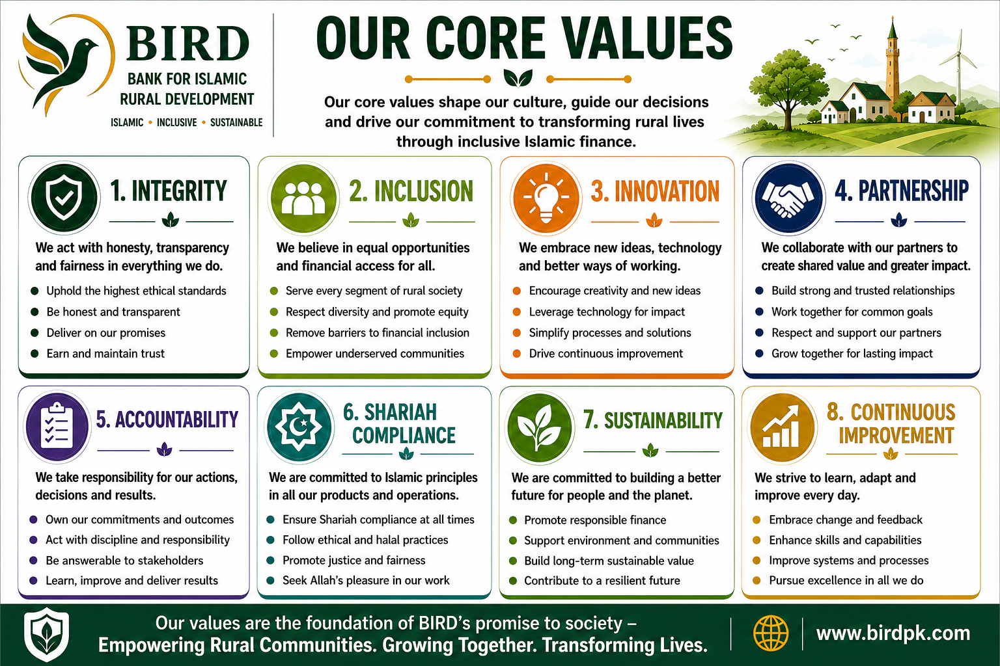

BIRD is proposed as a specialized Islamic financial institution and rural ecosystem development model.
To build the world's most trusted model for rural transformation.
To transform rural economies by connecting people, productive opportunities, ethical finance, knowledge, markets, technology and institutions through an integrated and measurable development ecosystem.
Integrity • Inclusion • Innovation • Partnership • Accountability • Shariah Compliance • Sustainability • Continuous Improvement.
